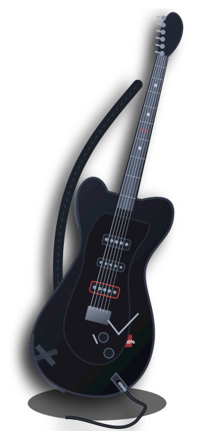
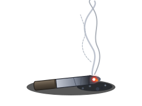
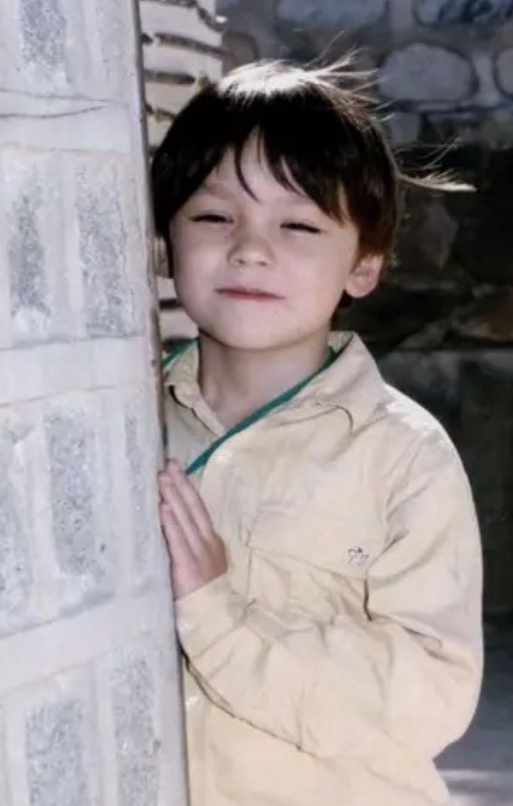
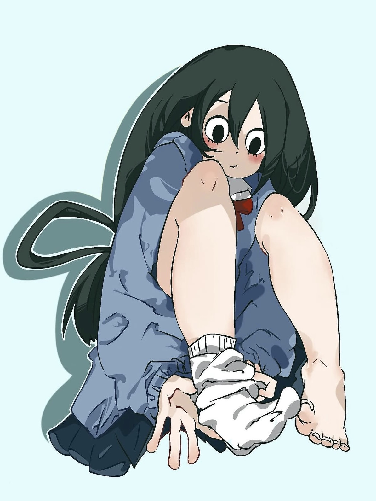
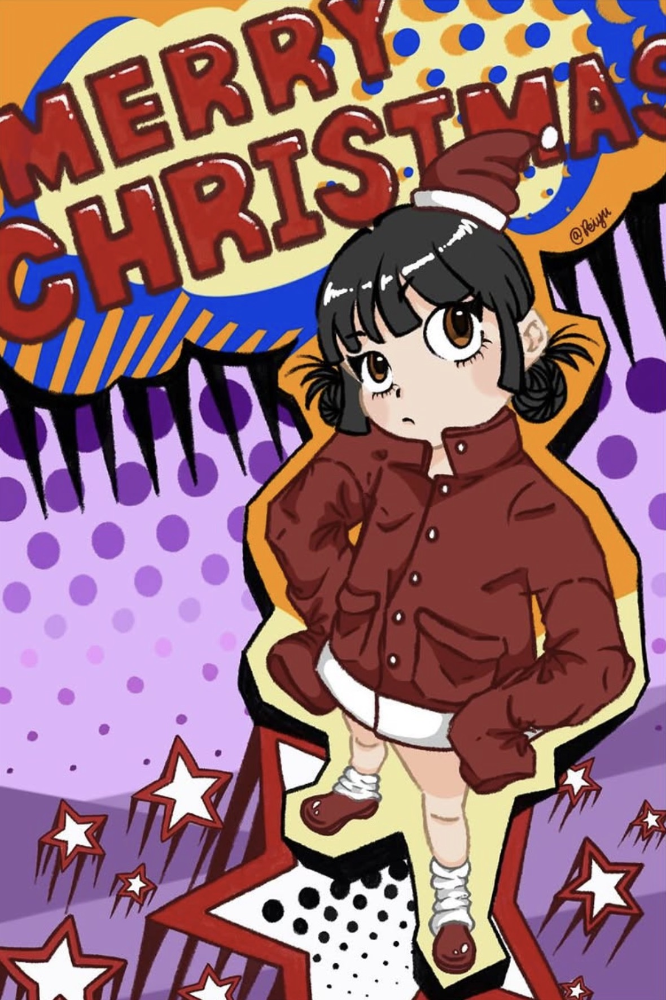
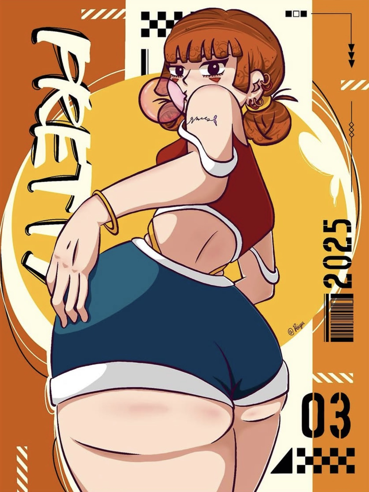

【沒有熱情的活著，不如死了算了】

一個喜歡藝術、音樂與生活的人。
歡迎來到我的個人介紹網站。

一些關於我的基本資料與個人檔案
珮 / Pei
女
台南應用科技大學
多媒體動畫系
三年級
2006 / 04 / 14
牡羊座 ♈
ESFP
畫圖、看動漫、聽音樂、跳舞
深入探索我的創意思維、實作態度與核心能力特質
喜歡嘗試不同的視覺風格，能將想法轉化為具體的設計作品。
面對不熟悉的軟體或技術，願意自己研究、嘗試並找出解決方法。
不只停留在想法，也願意實際操作不同工具完成作品。
製作過程中遇到技術問題時，會嘗試不同方法找出原因。
興趣是生活不可缺少的靈感來源
喜歡透過畫畫表達自己的想法， 從角色設計到插畫創作， 享受把腦海中的想像變成作品的過程。
喜歡看不同類型的作品， 欣賞角色設定、劇情發展與精緻的畫面， 每一部作品都能帶給我不同的感受。
音樂是日常生活中不可缺少的一部分。 喜歡 K-pop、西洋音樂和 J-pop， 不同風格的歌曲都能帶來不同心情。
喜歡跟著音樂跳舞， 尤其是喜歡舞蹈與音樂結合的感覺， 享受透過肢體表達自己的過程。
將創意轉化為具體作品的專業能力與工具掌握
我的專長主要在多媒體設計與動畫製作，對視覺設計、角色創作及影像製作有興趣，也具備基本的美術設計與創意思考能力。平時會使用 After Effects、Premiere、CapCut 等軟體進行影片剪輯與動畫製作，也接觸過 Blender、Unity 等工具，能夠將創意轉化成實際的作品。
除此之外，我也喜歡嘗試不同的設計方式，遇到不熟悉的軟體或技術時，會透過查找資料及實際操作來解決問題，並從製作過程中累積經驗。
精選插畫創作、視覺設計與多媒體實作成果（點擊圖片可放大查看）

針對《我的英雄學院》人氣角色「蛙吹梅雨」進行的二次創作插畫。作品著重於生動展現角色的肢體動態與可愛神情，特別挑戰了自然的蹲姿與穿脫襪子時的手部、足部線條細節。在光影渲染上運用柔和清新且具立體感的層次，展現對角色設計、人體骨架結構及色彩氣氛的掌握能力。

以聖誕佳節為靈感創作的原創角色海報插畫。大膽採用美式普普藝術（Pop Art）風格，結合半色調網點（Halftone Dots）、鮮豔飽和的色彩撞色與動感立體英文字體設計。透過生動的原創人物設定與滿版視覺構圖，傳遞活潑熱鬧、具有強烈個人設計風格與視覺衝擊力的節慶氛圍。

將現代街頭潮流文化、平面幾何排版與動漫角色插畫相互融合的海報設計作品。以明亮且具現代感的暖橘與亮黃作為主色調，巧妙融入條碼（Barcode）、幾何色塊、斜線符號與手寫感標準字，展現大膽自信的人物姿態與前衛時尚的視覺排版功力，體現將插畫作品轉化為商業視覺海報的實作成果。
音樂是生活中不可缺少的陪伴與節奏
以多元的音樂風格聞名，融合 Hip-hop、 Pop、R&B 等元素，陪我走過十年的低潮。 / 特別喜歡的歌曲是 Love Maze、2!3!
以團體創作與表演能力受到關注， 音樂風格涵蓋流行、舞曲與抒情歌曲， 充滿活力的編舞和著名的刀群舞也是他們的一大特色。 / 特別喜歡的歌曲是 Cilli
美國創作歌手，音樂涵蓋 Country、 Pop 與 Indie 等風格。 擅長透過細膩的歌詞描述愛情、 成長與生活中的各種故事。 / 特別喜歡的歌曲是 Red、Gorgeous
美國歌手與饒舌創作者， 擅長融合 Pop、Hip-hop 與 R&B， 音樂風格多變，具有強烈的個人特色， 我特別喜歡他的嗓音。 / 特別喜歡的歌曲是 Need To Know
加拿大搖滾天后，以 Pop Punk 和 Alternative Rock 風格震撼樂壇。 作品充滿青春、叛逆個性與龐克搖滾氣息。 / 特別喜歡的歌曲是 Girlfriend
日本創作型歌手，以充滿情感的歌聲 和細膩的抒情歌曲受到喜愛。 擅長透過旋律與歌詞傳達情緒， 作品具有很強的感染力。 / 特別喜歡的歌曲是乾燥花
我的學習環境與專業技能養成地
台南應用科技大學位於台南市， 是一所以藝術、設計及應用領域為特色的學校。 學校提供多元的專業學習環境， 讓學生能夠培養創意、實務能力與專業技能。
我目前就讀於多媒體動畫系三年級。 這個科系結合藝術設計與數位科技， 學習內容包含動畫製作、角色設計、 影像處理、3D 建模及多媒體創作等領域。
在學習的過程中，我逐漸接觸不同的設計工具 與創作方式，也透過課堂專題累積實作經驗。 希望未來能持續提升自己的設計能力， 創作出更多有趣且具有特色的作品。
我的專業證照與技能檢定認證
印前製程技術士技能檢定
Professional Certificate建築製圖技術士技能檢定
Professional Certificate深耕專業能力與拓展多元領域的長遠藍圖
未來希望能持續提升自己在動畫設計與多媒體領域的專業能力，除了加強動畫製作、角色設計及影像編輯技巧，也希望能進一步學習互動設計、網頁設計及新興數位技術。
在學期間，希望能多累積不同類型的作品，建立屬於自己的作品集，並透過實際專題與團隊合作增加經驗。
畢業後，希望能朝動畫設計、多媒體設計或相關創意產業發展，找到自己真正感興趣且能持續發揮創意的方向。
感謝你來認識我！歡迎交流與合作
如果你對我的作品或興趣有興趣，歡迎隨時與我聯繫交流。
✉ EMAIL: d13370707@gm.tut.edu.tw
📷 INSTAGRAM: Peiyu661
🌷 NAME: 珮 Pei